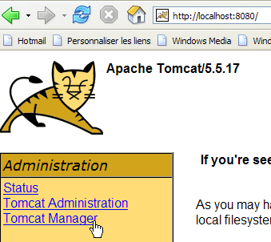
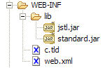

8. Die JSTL-Tag-Bibliothek
8.0.1. Einführung
Betrachten Sie die Ansicht [erreurs.jsp], die eine Liste von Fehlern anzeigt:

Es gibt mehrere Möglichkeiten, eine solche Seite zu schreiben. Hier interessiert uns nur der Teil, der die Fehler anzeigt. Eine Lösung besteht darin, Java-Code zu verwenden, wie es hier geschehen ist:
<%@ page language="java" contentType="text/html; charset=ISO-8859-1"
pageEncoding="ISO-8859-1"%>
<!DOCTYPE HTML PUBLIC "-//W3C//DTD HTML 4.01 Transitional//EN">
<%@ page import="java.util.ArrayList" %>
<%
// on récupère les données du modèle
ArrayList erreurs=(ArrayList)request.getAttribute("erreurs");
String lienRetourFormulaire=(String)request.getAttribute("lienRetourFormulaire");
%>
<html>
<head>
<title>Personne</title>
</head>
<body>
<h2>Les erreurs suivantes se sont produites</h2>
<ul>
<%
for(int i=0;i<erreurs.size();i++){
out.println("<li>" + (String) erreurs.get(i) + "</li>\n");
}//for
%>
</ul>
<br>
<form name="frmPersonne" method="post">
<input type="hidden" name="action" value="retourFormulaire">
</form>
<a href="javascript:document.frmPersonne.submit();">
<%= lienRetourFormulaire %>
</a>
</body>
</html>
Die JSP-Seite ruft die Fehlerliste aus der Anfrage ab (Zeile 8) und zeigt sie mithilfe einer Java-Schleife an (Zeilen 19–23). Die Seite vermischt HTML- und Java-Code, was problematisch sein kann, wenn die Seite von einem Webdesigner gepflegt werden muss, der den Java-Code in der Regel nicht versteht. Um diese Vermischung zu vermeiden, werden Tag-Bibliotheken verwendet, um JSP-Seiten neue Funktionen hinzuzufügen. Mit der JSTL-Tag-Bibliothek (Java Standard Tag Library) sieht die vorherige Ansicht wie folgt aus:
<%@ page language="java" contentType="text/html; charset=ISO-8859-1"
pageEncoding="ISO-8859-1"%>
<!DOCTYPE HTML PUBLIC "-//W3C//DTD HTML 4.01 Transitional//EN">
<%@ taglib uri="/WEB-INF/c.tld" prefix="c" %>
<html>
<head>
<title>Personne</title>
</head>
<body>
<h2>Les erreurs suivantes se sont produites</h2>
<ul>
<c:forEach var="erreur" items="${erreurs}">
<li>${erreur}</li>
</c:forEach>
</ul>
<br>
<form name="frmPersonne" method="post">
<input type="hidden" name="action" value="retourFormulaire">
</form>
<a href="javascript:document.frmPersonne.submit();">
${lienRetourFormulaire}
</a>
</body>
</html>
Das Tag (Zeile 4)
weist auf die Verwendung einer Tag-Bibliothek hin, die in der Datei [/WEB-INF/c.tld] definiert ist. Diese Tags werden im Seitencode verwendet, wobei ihnen der Buchstabe c vorangestellt wird (prefix="c"). Sie können ein beliebiges Präfix Ihrer Wahl verwenden. Hier steht c für [core]. Präfixe ermöglichen es Ihnen, Tag-Bibliotheken zu verwenden, die für bestimmte Tags möglicherweise dieselben Namen haben. Die Verwendung eines Präfixes beseitigt jegliche Mehrdeutigkeit. Die neue Seite enthält an den beiden Stellen, an denen zuvor Java-Code stand, nun keinen mehr:
- Abrufen der Seitenvorlage [errors, returnFormLink] (entfernter Abschnitt)
- Anzeigen der Fehlerliste (Zeilen 13–15)
Die Schleife zur Anzeige der Fehler wurde durch den folgenden Code ersetzt:
<c:forEach var="erreur" items="${erreurs}">
<li>${erreur}</li>
</c:forEach>
- Das <forEach>-Tag wird verwendet, um eine Schleife zu definieren
- Die Notation ${variable} wird verwendet, um den Wert einer Variablen anzuzeigen
Das <forEach>-Tag hat hier zwei Attribute:
- items="${errors}" gibt die Sammlung von Objekten an, über die iteriert werden soll. Hier ist die Sammlung das Objekt „errors“. Wo befindet sich dieses? Die JSP-Seite sucht nacheinander und in der folgenden Reihenfolge nach einem Attribut namens „errors“:
- dem [request]-Objekt, das die vom Controller gesendete Anfrage darstellt: request.getAttribute("errors")
- das [session]-Objekt, das die Sitzung des Clients darstellt: session.getAttribute("errors")
- das [application]-Objekt, das den Webanwendungskontext darstellt: application.getAttribute("errors")
Die durch das Attribut „items“ bezeichnete Sammlung kann verschiedene Formen annehmen: Array, ArrayList, Objekt, das die Schnittstelle „List“ implementiert, usw.
- var="error" wird verwendet, um das aktuelle Element der gerade verarbeiteten Sammlung zu benennen. Die <forEach>-Schleife wird nacheinander für jedes Element der items-Sammlung ausgeführt. Innerhalb der Schleife wird das Element der gerade verarbeiteten Sammlung daher hier als error bezeichnet.
Die Syntax ${error} fügt den Wert der Variablen „error“ in den Text ein. Diese Variable ist nicht unbedingt eine Zeichenkette. JSTL verwendet die Methode error.toString(), um den Wert der Variablen „error“ einzufügen. Anstelle der Syntax ${error} können Sie auch das Tag <c:out value="${error}"/> verwenden.
Zurück zu unserem Beispiel zur Anzeige von Fehlern:
- Der Controller fügt eine ArrayList mit Fehlermeldungen – also eine ArrayList mit String-Objekten – in die an die JSP-Seite gesendete Anfrage ein: request.setAttribute("errors", errors), wobei errors die ArrayList ist;
- Aufgrund des Attributs items="${errors}" sucht die JSP-Seite nacheinander in der Anfrage, der Sitzung und der Anwendung nach einem Attribut namens errors. Sie findet es in der Anfrage: request.getAttribute("errors") gibt die vom Controller in die Anfrage eingefügte ArrayList zurück;
- Die Fehlervariable des Attributs var="error" verweist daher auf das aktuelle Element der ArrayList, bei dem es sich um ein String-Objekt handelt. Die Methode error.toString() fügt den Wert dieses Strings – in diesem Fall eine Fehlermeldung – in die HTML-Ausgabe der Seite ein.
Die Objekte in der vom <forEach>-Tag verarbeiteten Sammlung können komplexer sein als einfache Strings. Nehmen wir das Beispiel einer JSP-Seite, die eine Liste von Artikeln anzeigt:
wobei [listarticles] eine ArrayList von Objekten des Typs [Article] ist, bei dem es sich um ein JavaBean mit den Feldern [id, name, price, currentStock, minimumStock] handelt, wobei jedes dieser Felder über eigene get- und set-Methoden verfügt. Das Objekt [listarticles] wurde vom Controller in die Anfrage eingefügt. Die vorangehende JSP-Seite ruft es über das Attribut „items“ des forEach-Tags ab. Das aktuelle Artikelobjekt (var="article") bezieht sich daher auf ein Objekt vom Typ [Article]. Betrachten Sie das Tag in Zeile 3:
Was bedeutet ${article.nom}? Tatsächlich verschiedene Dinge, je nach Art des Artikelobjekts. Um den Wert von article.nom zu erhalten, versucht die JSP-Seite zwei Dinge:
- article.getNom() – beachte die Schreibweise getNom, um das Feld „name“ abzurufen (JavaBean-Standard)
- article.get("name")
Das [article]-Objekt kann daher entweder ein Bean mit einem „name“-Feld oder ein Dictionary mit einem „name“-Schlüssel sein.
Die Tiefe des zu verarbeitenden Objekts ist unbegrenzt. Somit ist das Tag
ermöglicht es Ihnen, ein Objekt [individu] des folgenden Typs zu verarbeiten:
class Individu{
private String nom;
private String prénom;
private Individu[] enfants;
// méthodes de la norme Javabean
public String getNom(){ return nom;}
public String getPrénom(){ return prénom;}
public Individu getEnfants(int i){ return enfants[i];}
}
Um den Wert von ${person.children[1].lastName} zu erhalten, probiert die JSP-Seite verschiedene Methoden aus, darunter diese, die erfolgreich ist:
person.getChildren(1).getLastName(), wobei person sich auf ein Objekt vom Typ Person bezieht.
8.0.2. Installation und Erkundung der JSTL-Bibliothek
Die oben gegebenen Erläuterungen reichen für die Anwendung, die uns interessiert, aus, aber die JSTL-Tag-Bibliothek bietet neben den vorgestellten Tags noch weitere an. Um diese zu erkunden, können Sie ein im Bibliothekspaket enthaltenes Tutorial ausführen.
Wir werden die JSTL 1.1-Implementierung des [Jakarta Taglibs]-Projekts verwenden, die unter der URL [http://jakarta.apache.org/taglibs/] (Mai 2006) verfügbar ist:
 |  |
 |  |
 |  |
Die heruntergeladene ZIP-Datei enthält Folgendes:

Die beiden Dateien mit der Erweiterung .war sind Webanwendungs-Archive:
- standard-doc: Dokumentation zu JSTL-Tags
- standard-examples: Beispiele für die Verwendung von Tags
Wir werden diese Anwendung in Tomcat bereitstellen. Wir starten Tomcat über die entsprechende Option im Menü [Start], geben dann die URL [http://localhost:8080] ein und folgen dem Link [Tomcat Manager]:

Anschließend wird eine Authentifizierungsseite angezeigt. Wir melden uns als manager/manager oder admin/admin an, wie in Abschnitt 2.3.3 beschrieben.

Es wird eine Seite angezeigt, auf der die derzeit in Tomcat bereitgestellten Anwendungen aufgelistet sind:

Über die Formulare am Ende der Seite können wir eine neue Anwendung hinzufügen:

Über die Schaltfläche [Durchsuchen] wählen wir eine .war-Datei aus, die bereitgestellt werden soll.

Auf dem Screenshot ist es nicht zu sehen, aber wir haben die Datei [standard-examples.war] aus der heruntergeladenen JSTL-Distribution ausgewählt. Die Schaltfläche [Bereitstellen] speichert diese Anwendung und stellt sie in Tomcat bereit.

Die Anwendung [/standard-examples] wurde erfolgreich bereitgestellt. Wir starten sie:

Leser werden gebeten, den verschiedenen Links auf dieser Seite zu folgen, wenn sie nach Beispielen für die Verwendung von JSTL-Tags suchen.
Die Anwendung [standard-doc] kann auf die gleiche Weise aus der Datei [standard-doc.war] bereitgestellt werden. Sie bietet Zugriff auf eher technische Informationen zur JSTL-Bibliothek. Für Anfänger ist sie weniger interessant.
8.0.3. Verwendung von JSTL in einer Webanwendung
In den Beispielen, die mit der JSTL 1.2-Bibliothek bereitgestellt werden, beginnen JSP-Seiten mit dem folgenden Tag:
Wir sind diesem Tag bereits in Abschnitt 8.1.1 begegnet und haben eine kurze Erklärung dazu gegeben:
- [uri]: URI (Uniform Resource Identifier), unter dem sich die Definitionen der auf der Seite verwendeten Tags befinden. Dieser URI wird vom Webserver verwendet, wenn die JSP-Seite in Java-Code übersetzt wird, um zu einem Servlet zu werden. Er wird auch von Webentwicklungswerkzeugen verwendet, um die korrekte Syntax der auf der Seite verwendeten Tags zu überprüfen oder Vorschläge zur automatischen Vervollständigung anzubieten. Wenn Sie mit der Eingabe eines Tags beginnen, kann ein mit der Bibliothek vertrautes Tool dem Benutzer dann mögliche Attribute für dieses Tag vorschlagen.
- [prefix]: Präfix, das diese Tags auf der Seite identifiziert
Die URI [http://java.sun.com/jsp/jstl/core] kann nicht verwendet werden, wenn Sie nicht mit dem öffentlichen Internet verbunden sind. In diesem Fall können Sie die Tag-Definitionsdatei lokal ablegen. Mehrere solcher Dateien sind in der JSTL 1.2-Distribution im Ordner [tld] (Tag Language Definition) enthalten:

JSTL ist eigentlich eine Sammlung von Tag-Bibliotheken. Wir werden nur die Bibliothek [c.tld] verwenden, die als „Core“-Bibliothek bekannt ist. Wir werden die oben erwähnte Datei [c.tld] im Ordner [WEB-INF] unserer Anwendungen ablegen:

und fügen den folgenden Tag in unsere JSP-Seiten ein, um die Verwendung der „Core“-Bibliothek zu deklarieren:
Die Verwendung von Tag-Bibliotheken ermöglicht es uns zwar, Java-Code in JSP-Seiten zu vermeiden, doch werden diese Tags natürlich in Java-Code übersetzt, wenn die JSP-Seite zu einem Java-Servlet kompiliert wird. Sie verwenden Klassen, die in zwei JAR-Dateien [jstl.jar, standard.jar] definiert sind, die sich im Ordner [lib] der JSTL-Distribution befinden:

Diese beiden JAR-Dateien werden im Ordner [WEB-INF/lib] unserer Anwendungen abgelegt:

Wir verfügen nun über die Grundlagen, um die nächste Version unserer Beispielanwendung in Angriff zu nehmen.